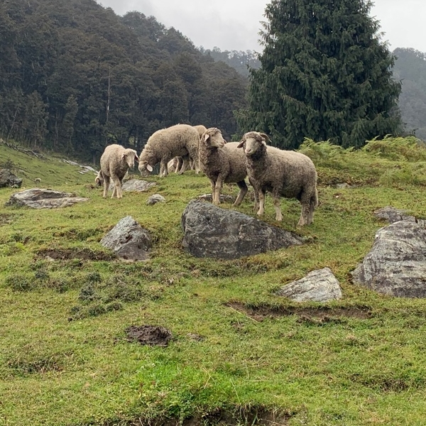
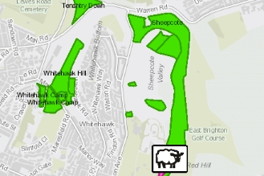

Journey of Mattress
Sheep Farming

Date Registered
January 12, 2021
Sheep Type
Gaddi
Sheep Age
2-3 years
Flock Size
569
Sheep Location
Kullu, Himachal Pradesh, India
Location of Sheep Grazing & Farm

Verify Record on blockchain